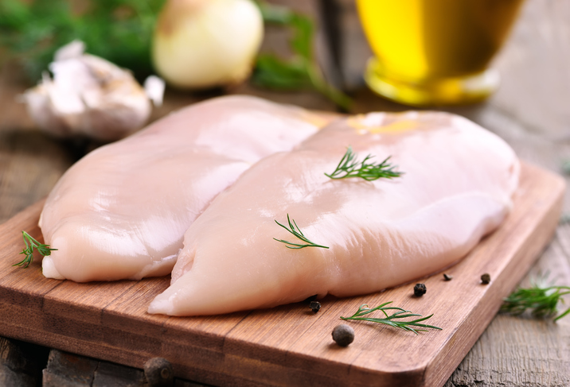

La carne es uno de los alimentos básicos en cualquier dieta, a excepción de aquellas que apuestan por el vegetarianismo o veganismo. Como cualquier género, existen diferentes tipos de carne, en función del animal del que proceden y de algunas de sus propiedades más básicas, como puede ser el color. Esto le da unas características determinadas y también un sabor diferente, que se verá influenciado por la forma de cocinarla.
Existe una clasificación primaria que divide a la carne en carne roja y carne blanca.
Se entiende por carne roja aquella que proviene de mamíferos, como puede ser la carne de res, de caballo o la que proviene de la caza, como el jabalí o el venado. También existen algunas excepciones que incluyen ciertos tipos de ave como carne roja, como la perdiz o el faisán. Por normal general, se entiende que es un tipo de carne menos saludable que la carne blanca, ya que contiene una mayor cantidad de purinas, que una vez en el organismo se transforman en ácido úrico.

Por otra parte, la carne blanca es aquella que no proviene de mamíferos, sino de animales de dos patas, principalmente del pollo y el pavo. Esto tiene alguna excepción, ya que la carne de conejo se considera carne blanca y la de avestruz, carne roja. Suele tener mejor fama que la carne roja, debido a que se considera que es más ligera y más sana, ya que tiene una menor presencia de grasas.
Existen varios tipos de cocción para la carne, en función del punto al que se quiera el resultado. Es determinante el grado de color de la carne, pero también el sabor y la textura. En el sabor final también va a influir el corte, que es otra de las formas de diferenciar a la carne. Estos son los cinco principales tipos de cocción, de menos a más cocinado